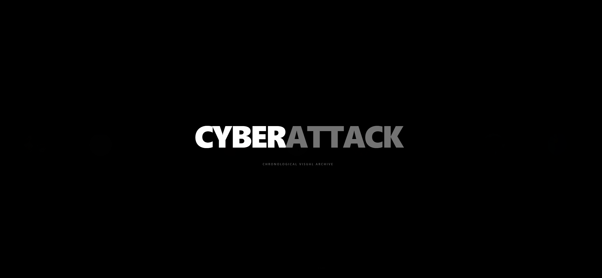
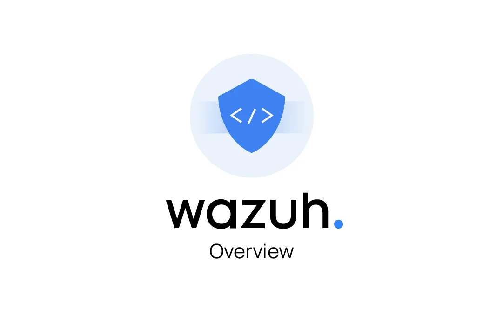

Cybersecurity
Cyberattack Timeline
Interactive timeline mapping the history of major cyberattacks, their vectors and global impact.

Interactive timeline mapping the history of major cyberattacks, their vectors and global impact.

Laboratorio SIEM en casa con Wazuh, Docker y endpoints macOS/Linux para monitoreo y análisis de vulnerabilidades.